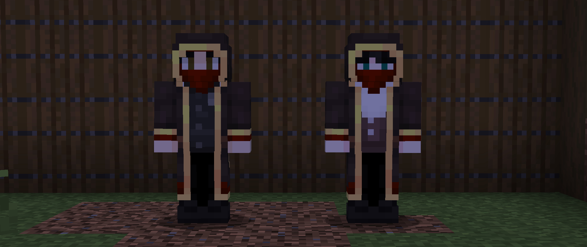
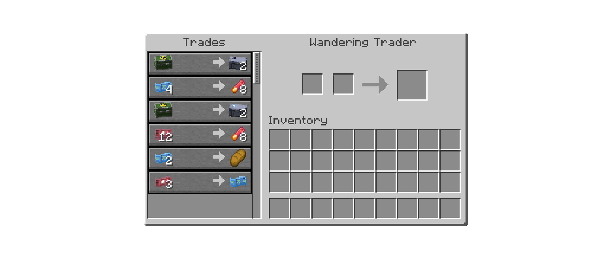
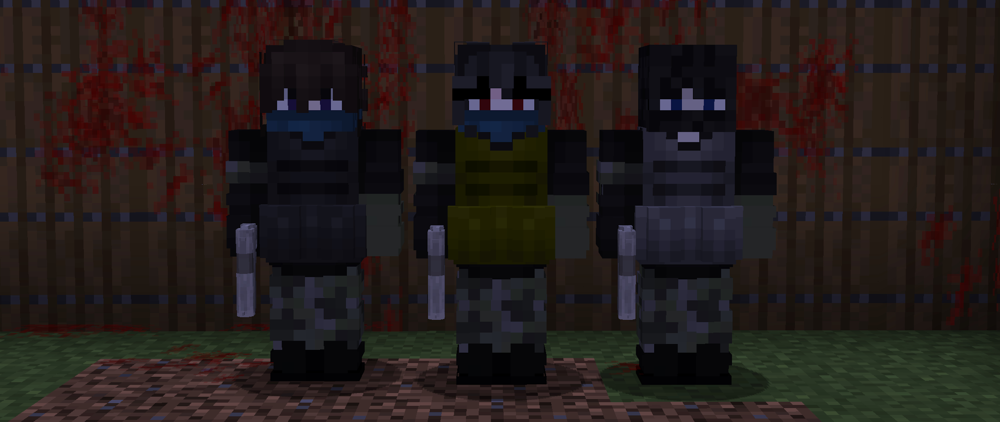

Wandering Traders
Wandering Traders now spawn every in-game day without llamas nearby a random player and offer various items, currency exchange, and supply cases.
Trades are conducted with the currencies Canto or Kumoyen, with the exception of supply cases, which are bought with uranium export crates.
Traders will now also disappear dropping a smoke grenade when attacked.


Supply cases have 5 origins: NSCU, UVR, Eastern Union, Riesen, and Denshima.
Each has 5 variants: Supplies, Materials, Uniform, Weapons, and Special Weapons.
Alongside items, the cases will always contain a variable amount of either Canto, Kumoyen, or both depending on it's origin.
This currency can then be used to purchase items outright from the traders.
Those items include ammunition, low-tier firearms, and general supplies.
Traders will also always have one trade exchanging between Canto and Kumoyen, at a 1:3 exchange rate.
Outlaws
Pillagers have been replaced with more militarised counterparts; Rival prospectors, mercenaries, or aggressive locals.
Instead of outposts and raids, they will appear around Berilia in camps and bases that can be attacked and looted for supplies, currency, and cases.
The outlaws themselves have a chance to drop their own items: Basic firearms and low-tier armour.
Once killed, they won't respawn, so players are free to take over their bases or simply mark them as empty.
